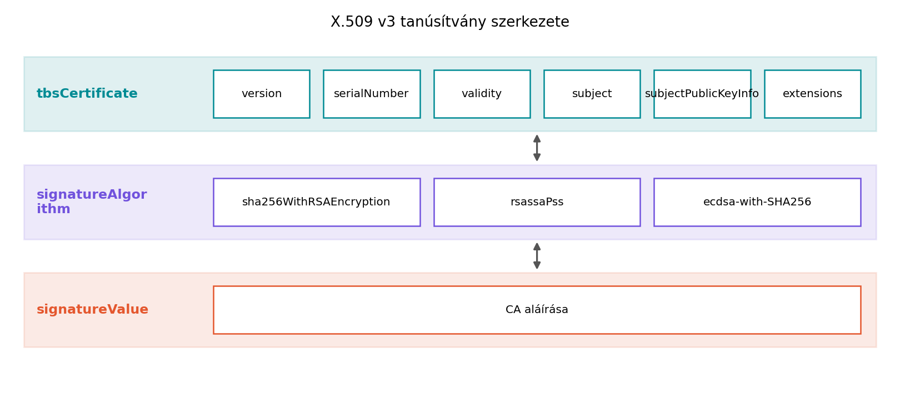

Amikor a böngészőnk megnyitja a bank.example oldalt, a
TLS-kézfogás során a szerver elküldi a nyilvános kulcsát. Az A Diffie–Hellman-kulcscsere és az ECDH és X25519 alfejezetekben láttuk, hogy a
nyilvános kulcs önmagában alkalmas a közös titok kialakítására, de nem
árulja el, kihez tartozik. Ha Alice egyszerűen elfogadja a kapott
kulcsot, Mallory közbeékelődve (man-in-the-middle) lecserélheti a
sajátjára, és utána minden titkosított forgalmat elolvas, majd továbbít
a szerver felé. A kulcscsere matematikailag helyes, de a kötés
(binding) hiányzik: a nyilvános kulcs és a név (domainnév,
szervezet) közötti kapcsolat.
A megoldás egy aláírt állítás, amelyet egy megbízható harmadik fél, a hitelesítésszolgáltató (Certificate Authority, CA) bocsát ki. Ez az állítás a tanúsítvány (certificate). A CA a saját privát kulcsával aláírja azt a struktúrát, amely tartalmazza az alany nevét, az alany nyilvános kulcsát, az érvényességi időt és egyéb korlátozásokat. Alice a CA nyilvános kulcsával ellenőrzi az aláírást, és ha az érvényes, elfogadja a név–kulcs kötést.
A tanúsítvány olyan, mint egy digitális útlevél: nevet, fényképet (nyilvános kulcsot), érvényességi időt és a kibocsátó pecsétjét (digitális aláírását) tartalmazza. Ha megbízunk az útlevél-kibocsátóban, elfogadjuk a személy és az arc közötti kötést. A digitális világban a pecsét a CA aláírása, a fénykép a nyilvános kulcs, a név pedig a domainnév vagy szervezeti azonosító.
A következő ábra az X.509 v3 tanúsítvány fő szerkezeti rétegeit mutatja:

Az ábra azt mutatja, hogy a ténylegesen aláírt rész a
tbsCertificate (to be signed), míg a
signatureAlgorithm mező az aláíráshoz használt algoritmust
azonosítja, a signatureValue pedig maga az aláírás
bájtvektora.
Definíció. Egy X.509 v3 tanúsítvány egy aláírt adatszerkezet, amely három fő részből áll:
tbsCertificate: a tanúsítvány törzse, amely a következő
mezőket tartalmazza:
version: v3 (értéke 2, a kódolás miatt
0-tól számozva),serialNumber: a CA által kiadott egyedi
sorozatszám,signature: az aláírási algoritmus azonosítója
(megismételve),issuer: a kibocsátó megkülönböztetett neve
(Distinguished Name, DN),validity: notBefore és
notAfter időpontok,subject: az alany megkülönböztetett neve,subjectPublicKeyInfo: az alany nyilvános kulcsa és
algoritmusa,extensions: opcionális kiterjesztések (SAN, Key Usage,
Basic Constraints stb.).signatureAlgorithm: az aláíráshoz ténylegesen használt
algoritmus.signatureValue: a CA privát kulcsával a
tbsCertificate DER-kódolt formáján készült digitális
aláírás.Az aláírás lehet Az RSA felépítése és Az OAEP és a Bleichenbacher-támadás kapcsán megismert RSA-PSS, ECDSA vagy EdDSA és Ed25519 szerinti ECDSA/Ed25519. A tanúsítvány aláírásának ellenőrzésekor a böngésző a kibocsátó nyilvános kulcsával a CA által választott algoritmust használja.
A v3 tanúsítványok kiterjesztései (extensions) pontosítják, mire használható a tanúsítvány:
subject mező hagyományos CN (common name)
elemét. Például egy bank.example tanúsítvány SAN mezője
tartalmazhatja:
DNS:bank.example, DNS:www.bank.example.digitalSignature
(pl. a TLS-kézfogás aláírása), keyEncipherment
(RSA-kulcscsere), keyCertSign (tanúsítványok aláírása),
cRLSign (visszavonási lista aláírása).serverAuth (TLS-szerver-hitelesítés),
clientAuth (TLS-kliens-hitelesítés),
codeSigning stb.CA logikai érték TRUE
vagy FALSE. Ha CA=TRUE, a tanúsítványban
szereplő (alany) nyilvános kulccsal további tanúsítványokat lehet
aláírni; ha CA=FALSE, a tanúsítvány végpont (például
szerver). A pathLenConstraint opcionálisan korlátozza, hány
közbenső CA lehet a láncban.Az X.509 tanúsítvány ASN.1 (Abstract Syntax Notation One) nyelven van definiálva, amely egy absztrakt leíró nyelv adatszerkezetek megadására. A tényleges bináris reprezentációt a DER (Distinguished Encoding Rules) adja meg: minden érték egy type–length–value (TLV) hármasban van kódolva, egyértelmű, kanonikus módon. A DER biztosítja, hogy ugyanaz az adatszerkezet mindig ugyanazt a bájtsorozatot adja, ami elengedhetetlen az aláírás-ellenőrzéshez.
A PEM (Privacy-Enhanced Mail) formátum a DER
bájtokat Base64-kódolásban tartalmazza,
-----BEGIN CERTIFICATE----- és
-----END CERTIFICATE----- fejlécekkel. A PEM olvasható
szöveg, így könnyen másolható e-mailekbe, konfigurációkba. A
cryptography csomag és az OpenSSL mindkét formátumot
kezeli. A teljes ASN.1 nyelvtan és a DER minden részlete meghaladja
ennek az alfejezetnek a kereteit; itt csupán annyi a fontos, hogy a
tanúsítvány bináris, determinisztikus kódolása biztosítja az aláírás
ellenőrizhetőségét.
A tanúsítvány önmagában még nem elég. A TLS-kézfogás során a szerver a tanúsítvány mellett bizonyítja a privát kulcs birtoklását is: például aláírja a kézfogásban szereplő tranzakciót, vagy a kulcscsere során a privát kulcsból számítja a közös titkot. Így ha Mallory megszerzi a szerver tanúsítványát, de nem ismeri a hozzá tartozó privát kulcsot, nem tudja azt használni. A teljes védelmi lánc tehát:
A közbeékelődés így csak akkor sikerülhet, ha a támadó vagy a CA privát kulcsát, vagy a szerver privát kulcsát kompromittálja, vagy ha a kliens hibásan ellenőriz (lásd a tipikus hibákat).
Az alábbi OpenSSL-parancs egy valós tanúsítványt jelenít meg:
openssl x509 -text -noout -in bank_example_cert.pemA kimenet egy fiktív bank.example tanúsítvány esetén így
nézhet ki (rövidítve, a bájtsorozatok helyettesítve):
Certificate:
Data:
Version: 3 (0x2)
Serial Number:
0e:3f:9a:...
Signature Algorithm: sha256WithRSAEncryption
Issuer: C = HU, O = Example CA, CN = Example Root CA
Validity
Not Before: Jan 1 00:00:00 2025 UTC
Not After : Dec 31 23:59:59 2025 UTC
Subject: C = HU, O = Bank Inc, CN = bank.example
Subject Public Key Info:
Public Key Algorithm: rsaEncryption
RSA Public-Key: (2048 bit)
Modulus:
00:c1:...
Exponent: 65537 (0x10001)
X509v3 extensions:
X509v3 Basic Constraints: critical
CA:FALSE
X509v3 Key Usage: critical
Digital Signature, Key Encipherment
X509v3 Extended Key Usage:
TLS Web Server Authentication
X509v3 Subject Alternative Name:
DNS:bank.example, DNS:www.bank.example
X509v3 Authority Key Identifier:
keyid:...
X509v3 Subject Key Identifier:
keyid:...
X509v3 CRL Distribution Points:
Full Name:
URI:http://crl.example-ca.com/root.crl
Signature Algorithm: sha256WithRSAEncryption
Signature Value:
8a:...Ebben a példában a Basic Constraints: CA:FALSE jelzi,
hogy ez szervertanúsítvány, nem CA. A Key Usage mezőben a
digitális aláírás és kulcstovábbítás engedélyezett, az EKU pedig
kizárólag TLS-szerver-hitelesítésre korlátozza. A SAN a
bank.example mellett a www.bank.example nevet
is tartalmazza, így a böngésző mindkét domainnél elfogadja.
Mielőtt a CA kiállít egy tanúsítványt, a kérelmező (szerver tulajdonosa) egy tanúsítványkérést (Certificate Signing Request, CSR) nyújt be. A CSR a következőket tartalmazza:
A CSR formátuma PKCS#10 (RFC 2986). A CA először ellenőrzi a CSR aláírását a benne szereplő nyilvános kulccsal, így biztos, hogy a kérés valóban a kulcspár tulajdonosától származik. Ezután validálja az alanyt: meggyőződik arról, hogy a domain valóban a kérelmezőhöz tartozik, vagy hogy a szervezet jogilag létezik.
A CA-k különböző mélységű ellenőrzést végezhetnek:
A legnagyobb kibocsátó jelenleg a Let’s Encrypt, amely ingyenes DV-tanúsítványokat ad ki automatizált protokollon keresztül. A protokoll neve ACME (Automated Certificate Management Environment), amelyet az RFC 8555 definiál.
A folyamat lépései:
http://domain/.well-known/acme-challenge/token
URL-en. A CA lekéri, ellenőrzi a tokent.TXT
rekordot helyez el a domain DNS-zónájában; a CA DNS-lekérdezéssel
ellenőrzi.Az alábbi protokollrajz a három szereplő (ACME-kliens, CA, a domain webszervere) üzenetváltását mutatja: a döntő az 5. lépés, amelyben a CA a tokent nem a klienstől kapja, hanem maga kéri le a domainről.
A Let’s Encrypt tanúsítványok 90 napos élettartamúak, ami arra ösztönöz, hogy a megújítás teljesen automatizált legyen. Az ACME integrálása tehát nemcsak kényelem, hanem biztonsági tervezési elv is: a rövid élettartam csökkenti a kompromittált kulcsok kockázatát.
Továbbvitt eredmény. Az itt bemutatott X.509 tanúsítványszerkezetet és ellenőrzési lépéseket használjuk a Tanúsítványlánc, hitelesítésszolgáltatók és visszavonás, a A TLS 1.3 kézfogás és a TLS a gyakorlatban: konfiguráció, vizsgálat és mTLS alfejezetekben. A tanúsítvány–kulcs kötés megbízhatóságának kérdése a Certificate Transparency és a Web PKI kudarcai alfejezetben kerül elő.
Az alábbi kód a cryptography csomag magas szintű
API-jával beolvas egy PEM-tanúsítványt, és kiírja a legfontosabb
mezőket:
from cryptography import x509
from cryptography.x509 import load_pem_x509_certificate
# OKTATÁSI CÉLRA – NEM ÉLES HASZNÁLATRA
# A PEM-fájl egy valós tanúsítvány (bank_example_cert.pem)
with open("bank_example_cert.pem", "rb") as f:
cert = load_pem_x509_certificate(f.read())
print("Alany:", cert.subject.rfc4514_string())
print("Kibocsátó:", cert.issuer.rfc4514_string())
print("Nem érvényes előtte:", cert.not_valid_before_utc)
print("Nem érvényes utána:", cert.not_valid_after_utc)
print("Kulcsméret:", cert.public_key().key_size)
try:
san = cert.extensions.get_extension_for_class(x509.SubjectAlternativeName).value
print("SAN:", [name.value for name in san if isinstance(name, x509.DNSName)])
except x509.ExtensionNotFound:
print("Nincs SAN kiterjesztés.")Várt kimenet (szemléltető, nem futtatott: fiktív tanúsítványhoz
illeszkedik; a kód többi része cryptography 46.0.5-tel,
önaláírt localhost tanúsítványon lefutott):
Alany: CN=bank.example,O=Bank Inc,C=HU
Kibocsátó: CN=Example Root CA,O=Example CA,C=HU
Nem érvényes előtte: 2025-01-01 00:00:00+00:00
Nem érvényes utána: 2025-12-31 23:59:59+00:00
Kulcsméret: 2048
SAN: ['bank.example', 'www.bank.example']A public_key().key_size az RSA-kulcs hosszát adja
bitekben. A SubjectAlternativeName kiterjesztés hiánya
esetén a böngésző a subject mező CN elemét
ellenőrizheti, de a modern gyakorlat a SAN-t tekinti mérvadónak. A kód
csupán a mezőket olvassa, nem végez aláírás-ellenőrzést; ahhoz a
cert.verify_directly_issued_by(ca_cert) metódust
használhatjuk a kibocsátó tanúsítványával.
requests.get(url, verify=False) vagy a
SSL_VERIFY_NONE megkerüli a teljes védelmet. Ez pontosan a
közbeékelődést teszi lehetővé. Helyes: az ellenőrzést mindig bekapcsolva
hagyni, és ha teszteléshez kell, akkor explicit, zárt környezetben.not_valid_before_utc/not_valid_after_utc
mellett CRL-t vagy OCSP-t használni (lásd Tanúsítványlánc, hitelesítésszolgáltatók és
visszavonás).Basic Constraints kiterjesztésében a CA érték
TRUE legyen?A válaszok a ### Megoldások elején találhatók.
1. feladat (A) Sorold fel az X.509 v3 tanúsítvány legalább hat mezőjét, és mindegyiknél egy mondatban add meg a szerepét.
2. feladat (A) Egy tanúsítvány subject
mezője CN=bank.example, a SAN kiterjesztés pedig a
DNS:www.bank.example és DNS:shop.example
neveket tartalmazza. Melyik nevet fogadja el a böngésző, ha a
felhasználó a bank.example oldalt nyitja meg? Mi a feltétel
ahhoz, hogy a bank.example is elfogadható legyen?
3. feladat (B) Hozz létre önaláírt tanúsítványt az
OpenSSL-lel, majd olvasd be a cryptography csomaggal, és
írd ki a Subject, Issuer és a SAN mezőt:
openssl req -x509 -newkey rsa:2048 -keyout teszt.key -out teszt.crt -days 1 -nodes -subj "/CN=localhost" -addext "subjectAltName=DNS:localhost"Írj Python-kódot a beolvasáshoz, és értelmezd a kimenetet.
4. feladat (B) Magyarázd el, mi a különbség a DV, OV és EV validáció között. Miért csökkent az EV vizuális megkülönböztetése a böngészőkben?
5. feladat (C) Bizonyítsd be vagy cáfold: ha egy támadó ismeri a CA nyilvános kulcsát és hozzáfér egy általa választott tanúsítványhoz, de nem ismeri a CA privát kulcsát, akkor nem tud olyan új tanúsítványt előállítani, amelynek aláírása a CA aláírásaként ellenőrizhető. Milyen feltevésre épül ez az állítás?
6. feladat (D) Tervezz egy egyszerű
tanúsítvány-ellenőrző modult Pythonban, amely a
cryptography csomaggal: - betölti a levéltanúsítványt és a
CA-tanúsítványt, - ellenőrzi, hogy az aláírás érvényes-e a CA nyilvános
kulcsával, - ellenőrzi, hogy a tanúsítvány nem járt-e le, - ellenőrzi,
hogy a megadott hostnév szerepel-e a SAN-ban. Írj hozzá egy rövid
tesztesetet a megoldásban.
Önellenőrzés – válaszok
subjectPublicKeyInfo mező, amely az
algoritmusazonosítót és a nyilvános kulcs anyagát tartalmazza.Basic Constraints: CA=TRUE kiterjesztésből tudja, hogy ez a
tanúsítvány CA-szerepkörű. Ha a CA=FALSE, a kulcs nem
használható tanúsítvány aláírására.1. feladat (A)
Például: serialNumber (egyedi azonosító),
issuer (kibocsátó DN), validity (érvényességi
idő), subject (alany DN), subjectPublicKeyInfo
(nyilvános kulcs), extensions (kiterjesztések),
signatureValue (CA aláírás).
2. feladat (A)
A SAN a www.bank.example és a shop.example
nevet tartalmazza, a bank.example-t nem. A modern böngésző
a SAN-t ellenőrzi, ezért a bank.example nyitása sikertelen
lenne, mert a tanúsítvány nem tartalmazza ezt a nevet; a böngésző hibát
jelez. A www.bank.example elfogadható, mert szerepel a
SAN-ban. Ha a subject mezőben van
CN=bank.example, néhány régebbi implementáció fallbackként
elfogadhatja, de a jelenlegi gyakorlatban nem megbízható. Ahhoz, hogy a
bank.example is működjön, fel kell venni a SAN-ba
(DNS:bank.example).
3. feladat (B)
A fenti OpenSSL-parancs létrehoz egy önaláírt tanúsítványt
localhost SAN-nal. A Python-kód:
from cryptography import x509
from cryptography.x509 import load_pem_x509_certificate
with open("teszt.crt", "rb") as f:
cert = load_pem_x509_certificate(f.read())
print("Subject:", cert.subject.rfc4514_string())
print("Issuer:", cert.issuer.rfc4514_string())
try:
san = cert.extensions.get_extension_for_class(x509.SubjectAlternativeName).value
print("SAN:", [name.value for name in san if isinstance(name, x509.DNSName)])
except x509.ExtensionNotFound:
print("Nincs SAN")Kimenet: Subject: CN=localhost,
Issuer: CN=localhost, SAN: ['localhost'].
Mivel önaláírt, a Subject és az Issuer
megegyezik.
4. feladat (B)
A DV csak a domain kontrollját ellenőrzi (automatikusan), az OV emellett
a szervezet jogi létezését, az EV pedig a legmélyebb, emberi ellenőrzést
is elvégzi. A böngészők az EV vizuális jelzését azért csökkentették,
mert a felhasználók nem értették a különbséget, és a phishing-támadások
ellen a domain-hitelesítés egyéb modelljei (például a Certificate
Transparency) fontosabbak lettek. (Ellenőrzési igény: a böngészők
döntéseinek pontos idővonala és okai további forrásból
ellenőrizhetők.)
5. feladat (C)
Az állítás igaz, feltéve, hogy a CA aláírási sémája EUF-CMA
biztonságú (lásd A digitális aláírás és az
EUF-CMA biztonság). A bizonyítás vázlata: tegyük fel, hogy a támadó
képes új tanúsítványt hamisítani a CA nyilvános kulcsával. Az új
tanúsítvány tbsCertificate része olyan üzenet, amelyen a
támadó érvényes aláírást produkált anélkül, hogy a CA privát kulcsát
ismerte volna. Ez pontosan egy EUF-CMA-törő, aki a CA aláírási sémáját
feltörné. Mivel a CA aláírási sémája (RSA-PSS, ECDSA vagy Ed25519)
feltételezetten EUF-CMA biztonságos, ez ellentmondás, tehát a támadó nem
képes ilyen tanúsítványt gyártani. (Valós veszély a rossz
paraméterhasználat: ha a CA aláírási sémáját nem konstans idejű, vagy
rossz nonce-t használ, az EUF-CMA tulajdonság sérülhet.)
6. feladat (D)
Egy lehetséges ellenőrző modul:
import datetime
from cryptography import x509
from cryptography.x509 import load_pem_x509_certificate
def verify_cert(leaf_path, ca_path, hostname, now=None):
with open(leaf_path, "rb") as f:
leaf = load_pem_x509_certificate(f.read())
with open(ca_path, "rb") as f:
ca = load_pem_x509_certificate(f.read())
# 1. Aláírás ellenőrzése
leaf.verify_directly_issued_by(ca)
# 2. Érvényességi idő
if now is None:
now = datetime.datetime.now(datetime.timezone.utc)
if not leaf.not_valid_before_utc <= now <= leaf.not_valid_after_utc:
raise ValueError("A tanúsítvány lejárt vagy még nem érvényes")
# 3. Hostnév a SAN-ban
try:
san = leaf.extensions.get_extension_for_class(x509.SubjectAlternativeName).value
dns_names = {name.value for name in san if isinstance(name, x509.DNSName)}
except x509.ExtensionNotFound:
dns_names = set()
if hostname not in dns_names:
raise ValueError(f"A hostnév ({hostname}) nem szerepel a SAN-ban")
return True
# Teszt a 3. feladat önaláírt tanúsítványával (a levél és a CA ugyanaz)
print(verify_cert("teszt.crt", "teszt.crt", "localhost")) # TrueA verify_directly_issued_by a CA tanúsítványa alapján
ellenőrzi az aláírást, és a
not_valid_before_utc/not_valid_after_utc
időzónás (UTC) datetime objektumokat ad, így összehasonlíthatók az
időzónás now értékkel (a régi, naiv
not_valid_before/not_valid_after tulajdonságok
elavultak). A teszt futtatva True-t ad. A
hostnév-ellenőrzés a SAN DNS-bejegyzéseit vizsgálja. Az éles
használathoz a lánc minden elemét és a visszavonási státuszt is
ellenőrizni kell.
Az X.509 v3 tanúsítvány olyan aláírt adatszerkezet, amely a
tbsCertificate mezőben összeköti az alany nevét a nyilvános
kulccsal, és ezt a kötést a hitelesítésszolgáltató (CA) digitális
aláírása hitelesíti. A tanúsítvány legfontosabb mezői a
subject, issuer, validity,
subjectPublicKeyInfo és a v3 kiterjesztések: a
Basic Constraints a CA-szerep jelölésére, a
Key Usage/Extended Key Usage a kulcs
megengedett céljaira, a Subject Alternative Name pedig a
domainnevek ellenőrzésére szolgál. A tanúsítvány bináris reprezentációja
DER, a szöveges csomagolása PEM; a kérelem formátuma a PKCS#10 CSR,
amelyet a kérelmező privát kulcsával írnak alá. A CA a CSR aláírását és
a domain vagy szervezet kontrollját ellenőrzi, majd DV, OV vagy EV
szintű validációt végez. A Let’s Encrypt az ACME-protokollal
automatizálja a DV-tanúsítványok kibocsátását. Továbbvitt
eredmények: az X.509 szerkezet és ellenőrzés elengedhetetlen a
Tanúsítványlánc, hitelesítésszolgáltatók és
visszavonás, a A TLS 1.3 kézfogás és a TLS a gyakorlatban: konfiguráció, vizsgálat és
mTLS alfejezetekhez; a tanúsítvány–kulcs kötés megbízhatóságának
gyenge pontjait a Certificate Transparency és a Web
PKI kudarcai tárgyalja.
cryptography csomag x509 API-ja a pyca
dokumentációjában; a not_valid_before_utc (42-es verziótól)
és verify_directly_issued_by elérhetők; a
cryptography 46.0.5-ben a kódot lefuttattuk, a pontos
verziófüggőség ellenőrizendő.